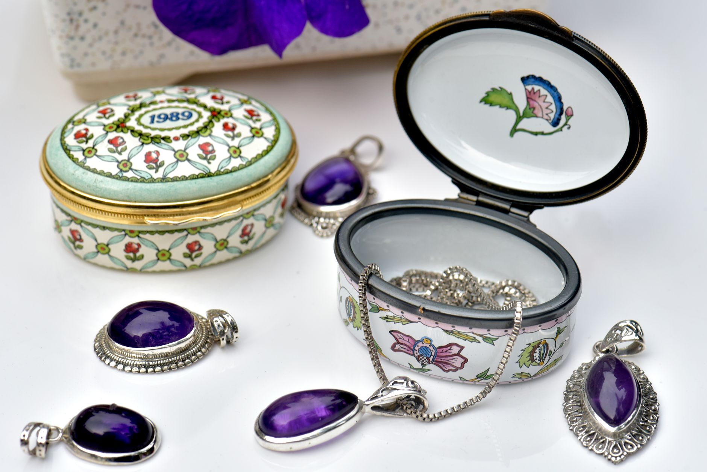

Inheriting silver can be a surprisingly complex situation. You might have a collection of family heirlooms, silverware, or even coins - all potentially valuable. But figuring out how much they’re worth and how to proceed with them during an estate can feel overwhelming. At Fused Distribution, we stock a wide range of silver products and we recommend a thoughtful approach to valuing inherited items. This guide will walk you through the process, helping you understand the key factors and make informed decisions.

What to Know About Inherited Silver
Determining the value of inherited silver isn’t simply about looking up the current spot price. Several factors come into play, impacting the final worth of your collection. These include the type of silver, its condition, any hallmarks or markings, and the overall market demand. Understanding these elements is crucial for a successful estate valuation. The value isn't just based on the raw material; it’s the combination of these elements that dictates the final price.
How to Get Started: Initial Assessment
The first step is a thorough assessment of what you’ve inherited. Create a detailed inventory. Photograph each item, noting its size, weight (if possible), and any unique characteristics. This inventory will be invaluable for getting accurate valuations. Don't underestimate the importance of documenting everything. A meticulous inventory provides a clear record of the inheritance for estate purposes. Next, identify the silver type:

- Sterling Silver: Typically 92.5% pure silver, marked with “925” or “Sterling.” This is the most common type of silver found in household items.
- Fine Silver: 99.9% pure silver, often unmarked. Fine silver is rarer and typically used in industrial applications.
- Silver Plate: Silver coated with a base metal, usually nickel or copper. The value here is primarily in the base metal, not the silver itself. Silver plate is often found in older tableware.
- Silver Coins: These can have significant value, especially older or rare coins. Numismatic value, based on rarity and condition, can far exceed the silver content.
Determining the Silver Content and Weight
Accurately determining the silver content and weight is essential. Here’s how:
- Scale: Use a digital scale that measures in grams. This is the most accurate method. A precision scale capable of measuring to 0.1 grams is highly recommended.
- Measuring Tools: For items like silverware, you can use a calibrated scale or a set of precision scales to weigh individual pieces. For larger items, consider using a balance scale for greater accuracy.
- Hallmarks: Look for hallmarks indicating the silver purity. Common markings include “925,” “Sterling,” “F,” “999,” or “sp” (for Spanish silver). These markings provide direct evidence of the silver content.
- Calculating Weight: Remember, one ounce of sterling silver weighs approximately 31.1 grams. This is a crucial conversion factor for calculating value.
Assessing Condition - A Major Value Driver
The condition of the silver significantly impacts its value. Here’s a breakdown of common condition grades:
- Mint Condition: Virtually flawless, with no wear or damage. This is rare for antique silver.
- Good Condition: Minor wear and tear, but no significant damage. Scratches and light polishing marks are typical.
- Fair Condition: Noticeable wear, scratches, and minor dents. Significant polishing may have removed some of the original surface.
- Poor Condition: Heavy wear, significant dents, and potential repairs. Repairs can substantially reduce the value. Repair quality is a key consideration.
Generally, the higher the condition grade, the higher the value. A piece in poor condition will be worth considerably less than one in mint condition, even if they are the same weight and silver type. Condition grading is subjective, so multiple opinions are helpful.
Understanding Market Value and Spot Price
The value of silver is determined by the spot price, which fluctuates daily. As of October 26, 2023, the spot price of silver is approximately $28.79 per ounce. However, this is just the base price. The actual value of your inherited silver will be influenced by premiums, which reflect the cost of fabrication, hallmarks, and dealer markup. Market volatility can significantly impact the value of silver.
Premiums - Adding to the Cost
Premiums are the extra amount you pay above the spot price. These can vary depending on several factors:
- Dealer Markup: Dealers typically add a markup of 10-20% to the spot price. This covers their operating costs and profit margin.
- Fabrication Costs: If the silver needs to be melted down and recast into new items, fabrication costs will apply. These costs can vary depending on the complexity of the work.
- Hallmarking Costs: Adding hallmarks (official markings indicating purity) can add to the cost, particularly if custom hallmarks are required.
- Assaying Costs: For higher purity silver, assaying (verification of purity by a certified assayer) may be required, adding to the cost.
Valuing Silverware and Collectibles
Silverware and collectible silver items require a more nuanced valuation. Consider these factors:
- Maker’s Mark: Identifying the maker’s mark can significantly increase the value of silverware. Researching the maker’s history, reputation, and production period is important. Antique silverware from renowned makers often commands a premium.
- Pattern Recognition: Certain silverware patterns are highly sought after by collectors. Rare or discontinued patterns can be particularly valuable.
- Rarity: Rare coins and silver items command higher prices. The rarity of a coin is determined by factors such as mintage, condition, and historical significance.
- Provenance: The history of ownership (provenance) can also increase value, particularly for historically significant items.
Selling Options: Where to Take Your Inherited Silver
Once you’ve determined the value of your inherited silver, you have several options for selling it:
- Local Coin Dealers: These dealers specialize in buying and selling precious metals and coins. They can offer a quick sale, but you may not get the highest price.
- Online Precious Metals Dealers: Several reputable online dealers offer competitive prices and convenience. Compare quotes from multiple online dealers.
- Auction Houses: Auction houses can be a good option for rare or valuable items, but they involve fees and potential commissions. Auction houses typically charge a percentage of the final sale price.
- Estate Sales: Offering the silver as part of an estate sale can be a viable option, though it may require more effort.
Common Mistakes to Avoid
Several common mistakes can negatively impact the value of your inherited silver. Here are a few to watch out for:
- Ignoring Hallmarks: Failing to identify hallmarks can lead to an underestimation of the silver’s purity.
- Overestimating Condition: Be realistic about the condition of your items. Overstating the condition can lead to a lower offer.
- Not Getting Multiple Quotes: Always obtain quotes from multiple dealers or auction houses to ensure you’re getting the best price.
- Rushing the Sale: Take your time to research and compare offers. Don’t feel pressured to accept the first offer you receive.
Estate Considerations: Legal and Tax Implications
Inherited silver can have legal and tax implications. Consult with an estate attorney and a tax advisor to understand your obligations. The IRS may consider the value of inherited silver as part of the estate’s taxable income. Also, depending on the circumstances, there may be estate tax considerations. It’s important to be aware of these factors and plan accordingly. Proper documentation of the inheritance is essential for estate tax purposes.
Protecting Your Silver Collection
Once you’ve decided to sell your inherited silver, take steps to protect it during the process. Use secure packaging and shipping methods to prevent damage. Consider insuring the items against loss or theft. We recommend insuring valuable silver items for at least the appraised value. Proper insurance coverage is crucial for mitigating risk.
Conclusion: A Strategic Approach
Valuing inherited silver for estate purposes requires a careful and methodical approach. By understanding the factors that influence silver value, assessing the condition of your items, and exploring your selling options, you can maximize the return on your inheritance. At Fused Distribution, we’re here to provide expert guidance and support throughout the process. We currently offer appraisals for a wide range of silver items - contact us today to learn more about our services. Let’s work together to ensure a smooth and profitable sale of your family’s silver legacy.
Related
- How To Calculate Your Average Cost Per Ounce Silver
- How To Build A Silver Inventory Spreadsheet
- How To Set Silver Spot Price Alerts For Free
Read next: How To Calculate Your Average Cost Per Ounce Silver